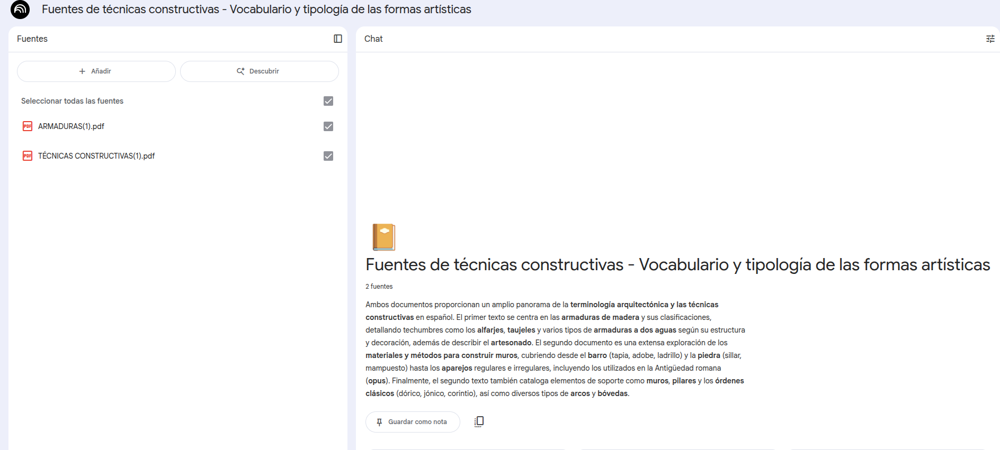
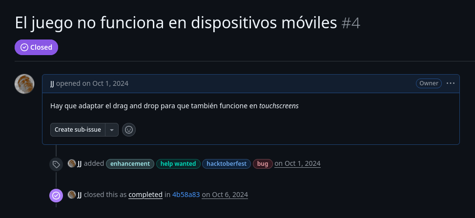
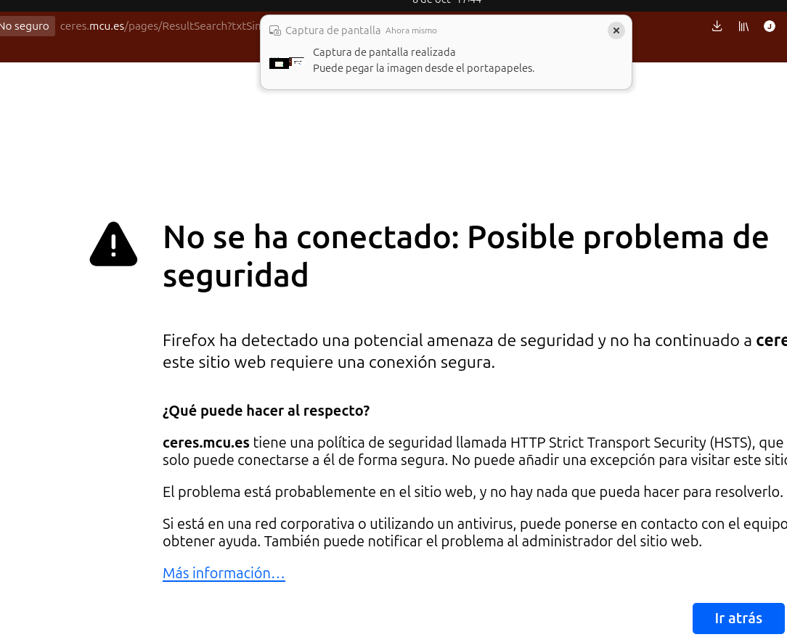
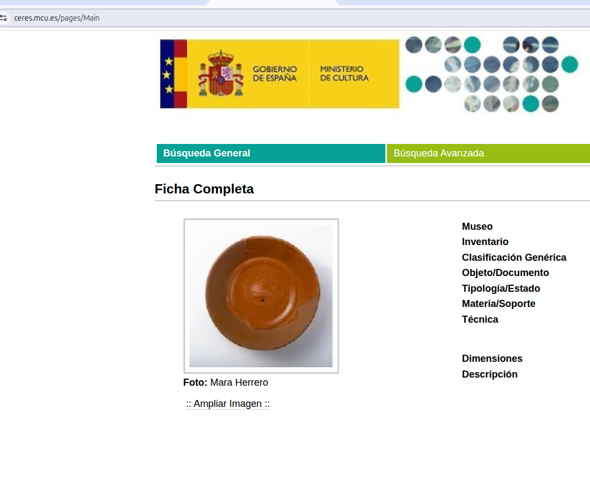

Hackeando la carrera de historia del arte con vibe coding
JJ Merelo, estudiante de Hª del Arte,
@jjmerelo.bsky.social
Tech & Talk & Tapas by Zenzorrito, Octubre 2025
¿Qué se hace en Historia del Arte?
📔 Elaborar apuntes
👨🎓 Estudiar
👷 Trabajos
✍️ Exámenes
¿Podrá mi old dev fu con ello?
Vale, no. Pero ¿podrá la IA con ello?
📔 Lo primero, los apuntes
La insoportable cantidad de publicidad de Wuolah
¡CoPilot, te necesito!
clean-pdf-images
# Antes, extrae imágenes a un directorio usando pdfimages
# Import más cosas y...
from PIL import Image
def delete_files_with_specific_dimensions(directory, dimensions):
if __name__ == "__main__":
# stuff here
dimensions_to_delete = [(974, 251), (1536, 1152), (395, 72), (217, 1094), (1769, 148)]
delete_files_with_specific_dimensions(directory, dimensions_to_delete)
👨🎓 En el principio, fue Mesopotamia
¿O quizá Sumeria? ¿O los acadios?
El teclear se va a acabar
Se inserta directamente en HTML para...
... jugar al juego más aburrido del mundo
🤦 Ay, el UX... 🤷♂️
Con lo que te das cuenta de cosas ⚠️
Tienes clientes
¡El UX es importante!
Dos IAs mejor que una
👷 ¿Esta estatua es griega o romana?
De repente oigo hablar de Windsurf
Les presento a Ceres: la web de Renfe de HdA
Buscador de recursos del Mº de cultura
¿EL URL de los resultados de la búsqueda? Pa k kieres eso jaja salu2
Resumen: vibe fail
function generateCERESUrl() {
const info = extractInformation();
return `https://ceres.mcu.es/pages/Main?idt=${info.idt}&inventary=${info.inventory}&table=${info.table}&museum=${info.museum}`;
}Puede que no sea culpa de Windsurf, pero incluso así...
Vistiendo santos: 👍
Web para una exposición imaginaria